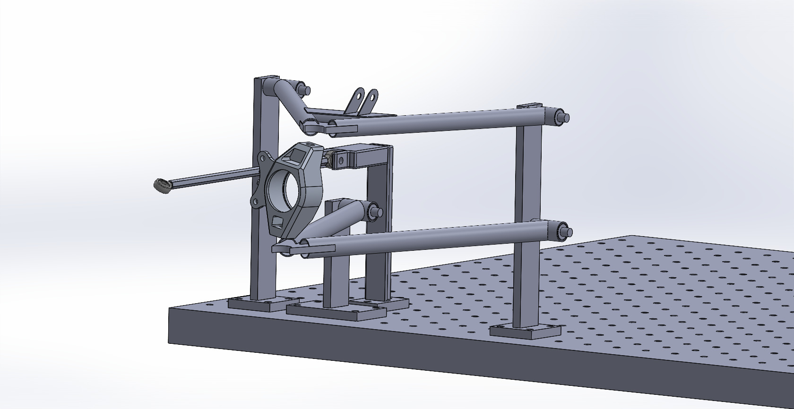
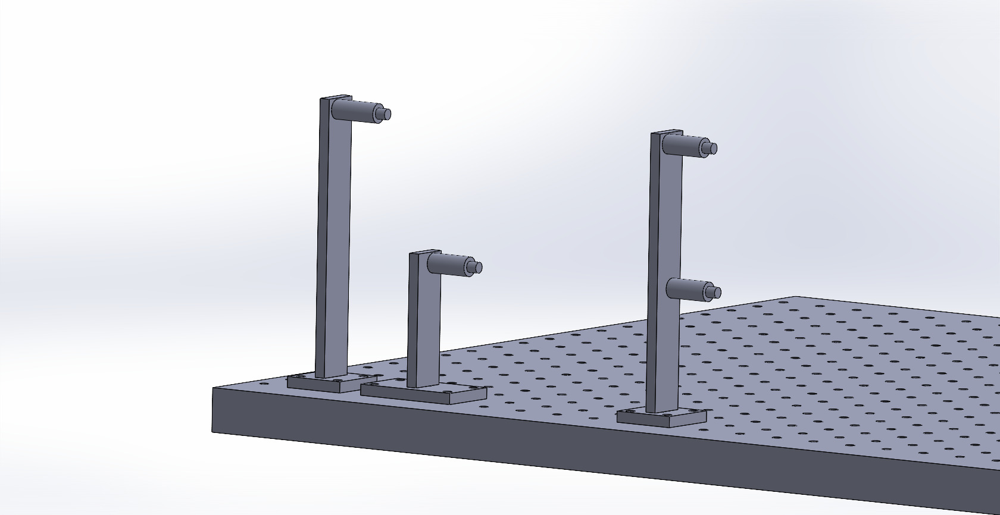
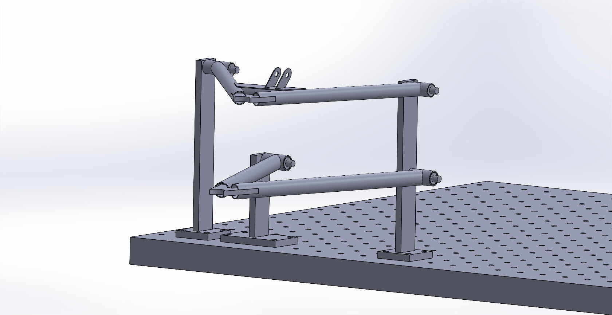

CSUF Baja SAE
Assisted seniors with suspension kinematics (2D and 3D) in SolidWorks. Designed and 3D printed jigs to support a PVC pipe mockup of the front suspension components, as well as the tie rod and upright, to test proper movement of components before manufacturing.

Overview
The senior design team decided to create all new suspension kinematics from the previous year's car. I assisted in calculations, and design of the suspension system, as well as designing jigs to test our suspension kinematics.
Design Process
After obtaining the desired suspension geometry, I used SolidWorks to create a jig to hold a PVC pipe mockup of suspension components properly in place to make sure everything functions as expected. I 3D printed the jigs on a Bambu Lab P1S in multiple parts and assembled them together, and finally bolting them to the jig table and assembling the PVC pipes and other components.
Gallery

